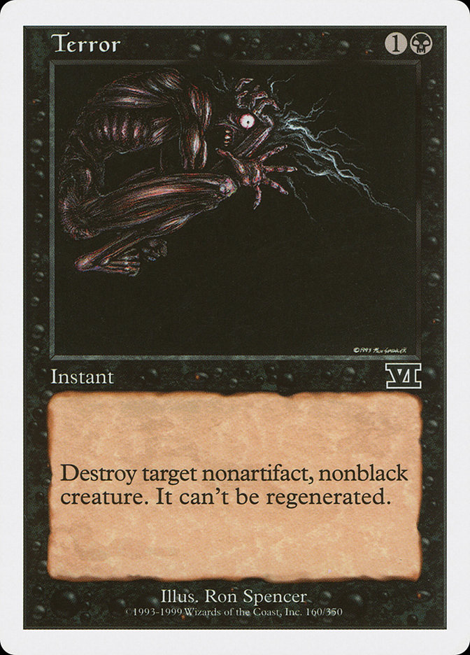
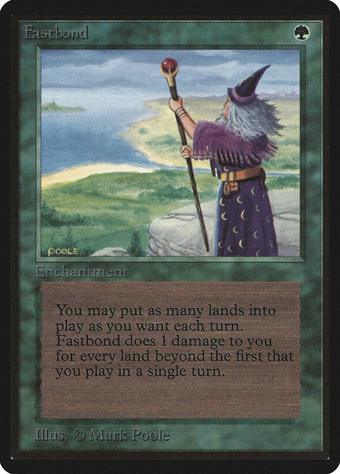

作者：Noah Weil
按：这是一篇比较老的专栏文章。我认为现在如果再去挑选10张牌可能结果会有很大不同。希望你在看完之后能对万智牌有更深刻的认识。
2007年4月16日
MTG中文翻译组，巴林的断杖
经过思考，大多数人都认为不会有完美的10张能够涵盖万智牌全貌的牌。 所以我们的目标只能是尽可能的将万智牌的元素集中到这10张牌中，但你终究可以通过你的选择来表达你所想强调的万智牌的面貌。 的确，这十张牌的选择标准完全是主观的。 因此我要提前声明我个人选择的标准：十张在一个大战后的，操英语的，僵尸遍布的世界中最好的用于万智牌教学的卡牌。
第一张 惊骇 (第六版)

这一张是用来勾起后代们兴趣的卡牌。 它并不能解释很多东西，然而它能勾起人们的好奇。 除了黑色还有别的什么颜色？ 什么是神器生物？ 还有什么其他种类？ 重生……什么东西？ 加上数字，骷髅图标，一个形象的名字，一段引人思索的规则，惊骇是一张很好开始。
第二张 双头龙 (第八版)
龙？! 哇赛，太酷了! 双头龙这张牌会带来更多的信息。 一个新颜色，一个不是神器的生物。 右下角还有些数字，以及牌面上影响这些数字的能力。 虽然没有明写出来，但是炎息这个能力足以暗示出前面的数字是力量。 此外，它的其他能力还指出了阻挡的规则以及部分攻击的规则。 最后，飞行这个异能，正好引出了……
第三张 撒拉之拥 (克撒传)
我们无需解释飞行是什么异能，而且这两个版本(克撒传和第八版)都没有解释飞行这个异能的文字。 事实上，这张牌上还提示出了一个如今已经变成关键词了的异能–警戒，这使得后代们知道生物是需要横置才能进攻的。 此外，通过结界将你的生物变大变强会给这些刚刚起步的后世们带来更多的乐趣。 为什么用克撒传的牌？ 因为同八版的比较起来，这张牌画得更好，背景文字更好，而且还能展示一下另一个系列的标志。 之后我们几个人认识到，仅仅在核心系列中做文章是不必要的。所以……
第四张 极速扩张 (Beta版)

如今我们领着后代们见识了生物，生物结界和生物杀手。 虽说通过这三者的互动已经能给后代们的万智牌游戏带来些乐趣，但是我们可以进一步拓展他们的视野。 这一张牌同之前的很多牌不同但是带来了很多有用的信息。 极速扩张 暗示着每张地只能用一次的规则。 此外，它还是一个非灵气的结界，这不是我们后代们能自己想到的。 但遗憾的是这张牌不能告诉他们只能在你自己的回合使用地牌。 这非常不幸，但好在我们的目标并非完全重构万智牌这个游戏。
第五张 退散 (暴风雨)
第五张牌，第五个颜色，并且带有新的名词。 之前我们并未解释瞬间和法术的区别，但是引入“咒语”这个词对后代们而言会是非常有助益的。 他们会注意到 “反击目标咒语。”和 “抓一张牌。”并不相同。 那么，咒语是什么？ 谁知道……希望他们能将地牌和非地牌分的开……极速扩张已经告诉他们地牌有特殊的规则，而退散也许可以进一步将其分开。 但我们将来的后代们会不会认为他们能够反击地牌呢？ 也许如此……但那毕竟需要4点费用才能做得到!
第六张 树林 (Beta版)

我们终于给他们留下了张地牌。 之前所提到的“地”到底是什么东西？ 我特意选择了Beta版的这张树林，因为它上面依然印有“横置以产生一点G到你的法术力池中”这句话而不是象新版那样只有一个大大的法术力符号。 而通过撒拉之拥，我们也已经传达了“横置”这个词的意思。 如今他们知道了生物需要“横置”方能进攻，地需要“横置”方能产生法术力，地牌不是咒语，以及每回合只能使用一张地(希望如此!) 我们已经打下了很好的一个基础，但是我们还要继续下去。
第七张 时间扭曲 (Beta版)

在这张牌上，他们会获得很多信息。 尤其是“重新抓七张手牌，”以及“牌库”和“坟场”。 除了这张牌，他们怎么可能知道起始手牌是七张？ 这虽说不是多么重要的规则，但是如果在这上面出了差错该多没意思。 别忘了，这不仅仅是为了教他们，也是也是为了吸引他们去学。 起手没有手牌和起手三十张手牌会让游戏非常无聊的。 而七张手牌则既能保证topdeck的乐趣也不致于使他们在游戏开始时无所事事。 另外，我们也引入了法术这个概念。 而这张牌也告诉了后代们法术的用法。 他们会理解为法术都是这样用呢还是只有这一张法术用法与其他法术不同呢？(断杖:此处这里指时间扭曲用完后直接移出游戏而非置于坟场的特殊规则。) 我宁愿相信他们会理解为前者。
第八张 多明纳里亚的审判(时空转移)
感谢Mark Rosewater提醒我应当告诉后代们基本地牌有五种。 因此我就把这张牌也放入了保险箱中。 反色保护这个概念并没有被阐明，因为这个概念有些过于复杂。 很可惜我们的后代们将没有机会获知关于“反XX保护”的具体内容，但我想他们也许也并不需要。 “保护”意味着“安全”，之后，他们知道了万智牌有五个颜色，五种地。 这也就是为什么每张牌背面都有五个颜色的图标。 但他们也许会纳闷，“Deckmaster”中t上的那一笔到底是什么意思？
第九张 光蛾壶 (秘罗地)
相当复杂的一张牌，但这时应该给他们点深刻的东西。 这张牌带来了一个意外的概念“战斗阶段之前的主阶段” 这到底是什么意思？ 这意味这有个战斗阶段还有个战斗阶段之后的阶段。 告诉他们这个总比让他们用“进攻”响应“惊骇”好些。 其他方面，光蛾壶告诉他们神器不是生物，以及除了地牌还有其他牌可以供给法术力。 这些对于将来的万智牌设计者而言会很有助益。
第十张 万物元气兽 (第九版)
最后，万物元气兽将作为一个最强音为这10张牌画上一个休止符。 维持？ 听上去好像是一个用来放置某些卡牌的地方。 虽然后代们或者无法确定这个步骤在回合中的具体位置，但毕竟告诉了他们这个阶段的存在。 践踏这个异能及其说明很有教育意义，而我更喜欢的是“防御玩家”部分的内容。 嗯……进攻玩家和防守玩家？ 这对理解战斗阶段相当有帮助。 最后，万物元气兽是个8/8的大兽。
就这样，我们完成了出给后代们的脑力谜题。